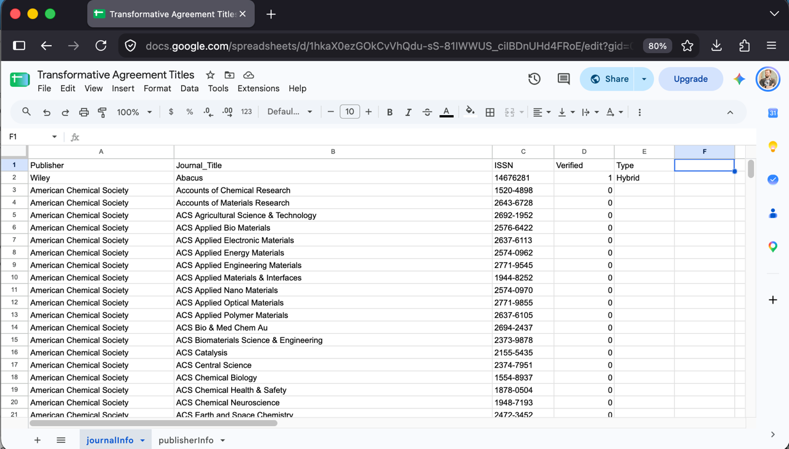
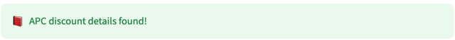
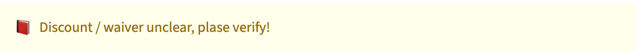
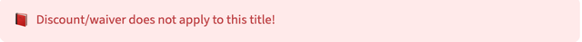
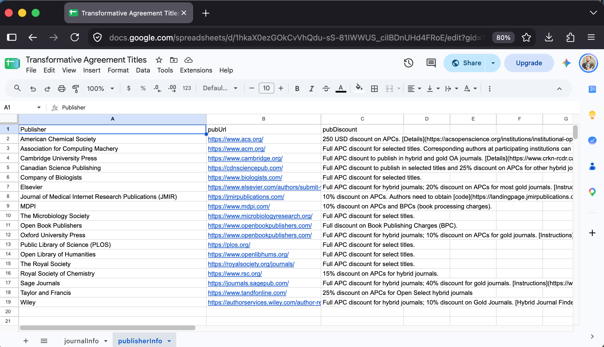
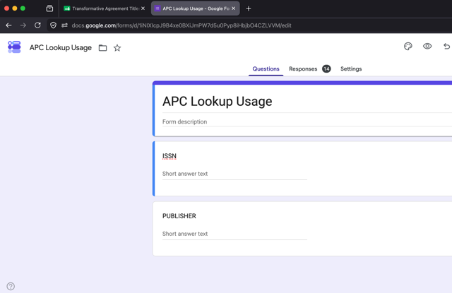
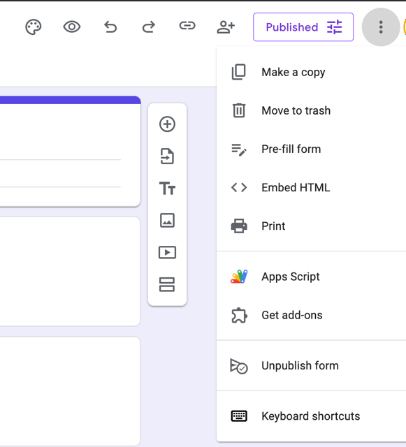
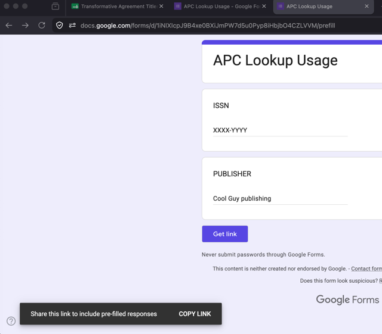

.___ __ .__.__
_____ ______ ____ __| _/_____/ |______ |__| | ______
\__ \ \____ \_/ ___\ / __ |/ __ \ __\__ \ | | | / ___/
/ __ \| |_> > \___ / /_/ \ ___/| | / __ \| | |__\___ \
(____ / __/ \___ > \____ |\___ >__| (____ /__|____/____ >
\/|__| \/ \/ \/ \/ \/
A Streamlit app that will take a Google Sheet of information about Article Processing Charges (APC) waivers and discounts, and present that to end users in an appealing way. You are free (and encouraged) to make a version of this platform for your institution.
A list of journals and publishers is presented to the end user. The user can click on a publisher to only see titles from that provider. The user can also click on a journal title to retrieve more dynamics about that title from OpenAlex.
Check out Brock Library’s instance of the app: https://brock-apc-info.streamlit.app/ to see it in action.
The design philsophy for this platform is very much inspiried by Collection Builder, particularly CB-Sheets. You can run the whole thing without installing anything on you local machine. Data goes in a Google Sheet, the app is deployed to Streamlit Cloud. Easy, peasy.
This video will explain how the platform works and a quick look at how to run it yourself.
📀 VIDEO DEMO 📀
You create a Google Sheet, with two tabs outlining publisher and title information (described next)
To log usage you create a Google Form and make note of some values
You clone the github repository
You add your details into a config file, upload a new logo image
You create an app on Streamlit cloud with your completed GitHub repository

1 if you know for a
fact this title is covered under you APC agreement, 2 if
you know for sure the discount does not apply, and 0 if you
are unsure.Hybrid, Gold etc.When set, File -> Share -> Publish to Web -> just this tab -> as CSV Make a note of the URL
Sometimes you’ll get title lists from a publisher that cover all of their titles, not just ones you know you have APC waiver or discounts for.
01 in that column.2.When you are looking at an actual journal title there will be a colour banner indicated this status, along with some additional diagnostic information.



The information here is used in the presentation of information to the end user. For example if the title is Hybrid you can add it here, so when the users sees the publisher discount description they can match it against the Hybrid label. This column value can also be empty if you don’t know the status. The imagine below shows and example of this.

When set, File -> Share -> Publish to Web -> just this tab -> as CSV Make a note of the URL
The platform will log every time someone looks up more information about an ISSN, or publisher. This is kept in a Google Sheet that is a response to a Google Form. To set that up you need to create the form with two short text fields like in the picture.

You need to have the form add results to a Google Sheet so you can look line by line. Once this form is setup, you need to determine 3 things. The URL of the form, and the two entry ‘keys’ that the form uses.
Under the 3 dot menu is ‘Pre-fill’ form.

Select that and fill in some temp values then click* Get Link and COPY LINK

You’ll get something along the lines of the following:
https://docs.google.com/forms/d/e/1FAIpQLSe61TNpD96WMGonWeV-w0nkvQjGRCfKaB6qsFmzQQXXXXXXXX/viewform?usp=pp_url&entry.192508000=XXXX-YYYY&entry.789120000=Cool+Guy+publishingMake a note of three values:
/ before the viewform. eg.
https://docs.google.com/forms/d/e/1FAIpQLSe61TNpD96WMGonWeV-w0nkvQjGRCfKaB6qsFmzQQXXXXXXXXentry.192508000entry.789120000Streamlit can look directly at a GitHub repository to deploy an app. You’ll need to have an Streamlit Cloud account, as well as a GitHub account. You’ll close the repository, configure your app in your repository, and finally tell Streamlit to deploy your app
src/config.py to change the few variables at the
top of the file.| Variable | Purpose |
|---|---|
| PUB_URL | The link to the csv file shared from the publisherInfo sheet |
| JOURNAL_URL | The link to the csv file shared from the journalInfo sheet tab |
| L_URL | The link to the form URL from the Forms step, with
/formResponse added to the end of it |
| ISSN_ENTRY | The entry value for the ISSN field from the Forms step |
| PUBLISHER_ENTRY | The entry value for the PUBLISHER field from the Forms step |
| PREAMBLE | Whatever lead-in text you’d like at the top of the app, you can use markdown here |
| STATUS_DESCRIPTION | Text to explain the status icons |
| PUBLISHER_LEADIN | Text to introduce the publisher information table |
| APC_INFO | Text of ‘more information’ expander |
| HELP_MESSAGE | Whatever text you’d like at the bottom of the app, you can use markdown here |
| LOGGING | Set this to True if you want the app to log to the
Google Form. You can set this to False if you don’t want to
do this. (You might want to shut this off for example while you are
testing your setup or modifying the app.) |
| IMAGE_PATH | The path to your image file if you want to have it named something
else for example. It defaults to images/logo.png and is set
for a size of 200px |
First make a back-up copy of src/config.py by copying it
somewhere safe.
If you just use github in the web interface you should probably just
clone the repository fresh. Add your values into
src/config.py from your back-up copy of the file and go
through the Deploy to Streamlit Cloud section with your new
repository.
git pull the new version of the repository. Add your
values into src/config.py from your back-up copy of the
file. git commit then push as usual and your
app should restart
You can do everything you need to do run an instance of this without installing anything and just by visiting a few sites and setting up accounts. You can of course clone the repository, install steamlit and modfiy things even more of you are comfortable with programming in Python.
Here’s the general steps to get your local setup going. (Using SSH for git)
git clone git@github.com:elibtronic/apc-details.git
cd apc-details
source .venv/bin/activate
streamlit run src/index.pyThen edit index.py in a text editor of your choice.
Streamlit should automatically render your changed app on the machine,
available via https://localhost:8501
To update your app, simply push your changes to GitHub. If you add in some fun additional feature please submit a Pull Request.